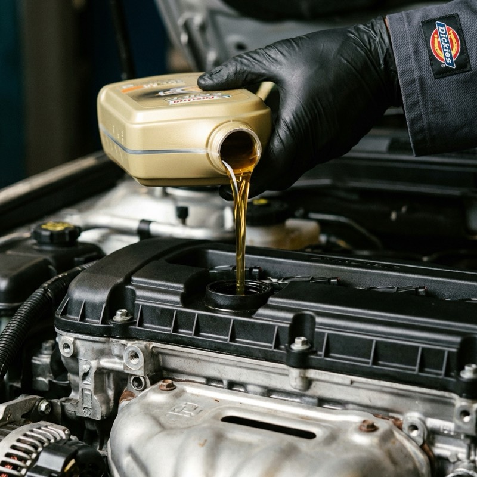

Wymiana Oleju
Ekspresowa i czysta wymiana oleju silnikowego. Pracujemy na markowych olejach (Valvoline, Motul, Castrol) oraz filtrach OEM. Zadbaj o żywotność swojego silnika.
- Wymiana filtrów
- Kasowanie inspekcji
- Ekologia i recykling